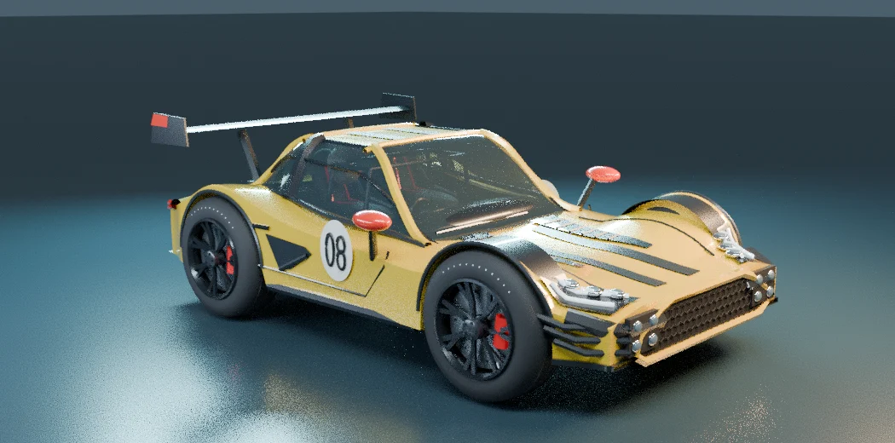

Arcade ricomincia da zero. I progressi precedenti sono conservati.
IL CRONOMETRO HA PARLATO
LA TUA STORIA
ARCADE / 28 · 1 GT iniziale · 8 auto da sbloccare
Stesso dispositivo: P1 SPAZIO / ESC · P2 W / E · P3 I / O. Su touch, ciascuno usa i pulsanti del proprio colore. Camera dall’alto consigliata.
Corsia 1
Rilascia il gas prima della curva
PRENDITI UN RESPIRO
TRAGUARDO
Esporta semaforo, contatti e risultato nei tempi della tua gara. Richiede After Effects sul computer.
ANTEPRIMA LIVE
Su iPhone, apri il gioco in Safari. Tocca Condividi, poi Aggiungi alla schermata Home e attiva Apri come app web.
Avvia SLOT 08 dall’icona sulla Home. Ruota il telefono per una visuale più ampia della pista.
La macchina segue il binario. Tieni Spazio o il pulsante ACCELERA per dare gas, rilascia per rallentare. Con il gas a interruttore basta un clic per accendere o spegnere. I pulsanti 65%, 85%, 100% scelgono la potenza: 65% aiuta a prendere confidenza, 100% serve sui rettilinei. Il cursore e i pulsanti +/− regolano il gas dal 20% al 100%, a passi del 5%. Si parte al 100%. Per P1 valgono anche i tasti 1, 2 e 3; freccia su/giù regola la potenza. Anche con poco gas, le curve strette richiedono il rilascio.
SCAMBIO o Esc prenota il prossimo scambio a X. Premi di nuovo per annullare. Il cambio avviene solo sugli scambi; non serve sterzare. Shift e frecce laterali restano compatibili.
C cambia camera. P mette in pausa. La velocità in km/h è l’equivalente in scala 1:18; la simulazione usa metri e secondi del modellino.
In manuale, troppo gas in curva fa partire il retrotreno: alza il gas per recuperare. La coda scivola prima di perdere il pattino: hai un margine di recupero, ma se insisti il pattino si stacca e perdi 3 secondi. Anche i bot sgommano, sbagliano e rientrano con la stessa penalità. In Arcade i rivali sviluppano il proprio assetto tra le gare, in base ai tuoi risultati: nessun aumento nascosto durante la corsa. I tuoi acquisti migliorano la tua GT. La guida assistita frena prima ed è più lenta. Il record distingue pista, difficoltà, assistenza e potenziamenti.
15 circuiti liberi e 50 geometrie di campagna: sette ambientazioni, gallerie, incroci su ponti, curve sopraelevate e spirali. Le paraboliche aumentano la tenuta; le curve piatte restano tecniche. Nel garage, la meccanica ha 30 livelli per sistema. I cerchi equipaggiati regolano leggermente la tenuta e gli alettoni la stabilità in curva. In modalità Automatico, cofano, cerchi, scarichi e aerodinamica seguono i potenziamenti. Completa gare contro i bot per guadagnare stelle, crediti e potenziamenti. Le stelle premiano posizione e guida pulita. Gli avversari prendono decisioni con un tempo di reazione: nessun bonus nascosto di velocità o tenuta. In campagna una GT appena uscita può urtare una rivale e farla uscire.
Quattro corsie: campagna e Grand Prix schierano te e cinque avversari. Gli scambi collegano alternativamente 1↔2 e 3↔4, oppure le due corsie centrali 2↔3. Prenota con Esc: ai bordi la richiesta aspetta uno scambio compatibile. Puoi entrare in una corsia occupata, ma rischi un contatto. Le auto si spingono nei tamponamenti e gli impatti forti possono staccare il pattino. I ponti separano le auto a quote diverse.
In due o tre: scegli la modalità locale. P1: Spazio / Esc; P2: W / E; P3: I / O. Su telefono usate i pulsanti colorati, anche con gas a interruttore. Stesso dispositivo, nessuna connessione tra telefoni. Dopo il primo arrivo, gli altri hanno 30 secondi per finire. Tutti condividono difficoltà, potenziamenti e assistenza.
Le gare partono direttamente dalla griglia.
Time Trial a settori. Ogni giro ha tre intertempi. Dal secondo passaggio, confronta ciascun settore con il tuo miglior tempo della sessione. Il cronometro conta anche il recupero dopo un’uscita.
Coach: nelle prime quattro piste mostra dove iniziare a rilasciare, senza frenare al posto tuo. Puoi attivarlo su tutte le piste o spegnerlo. Audio: premi Attiva audio; dal mixer puoi togliere solo la musica.
La risoluzione si adatta al dispositivo.
Il profilo Ultra punta al 4K. I 120 fps richiedono uno schermo a 120 Hz e potenza sufficiente; il contatore mostra i fotogrammi effettivi. Se il gioco scatta, scegli Adattiva o Fluidità.
Il suono parte con la gara
Il motore sale con velocità e gas. Il freno motore soffia al rilascio. Le gomme stridono quando perdi aderenza. Con il coach, un tono discendente invita a rallentare. La musica lascia spazio alle sgommate.